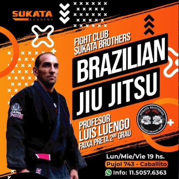
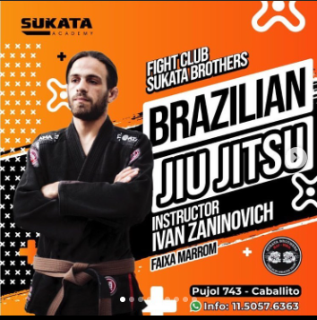
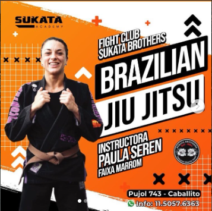

Profesores
Luis Norberto Luengo
Luis Norberto Luengo (Lula) es profesor y director de la academia fight club Sukata Brothers, ubicada en Pujol 743. Lula tiene una extensa carrera dentro de las artes marciales, tanto como intructor, seminarista y arbitro.
- Faixa preta 2do grado
- Arbitro oficial de jiu jitsu avalado por IBJJF
- Arbitro internacional de muay thay y kickboxing certificado por WBC e ISKA
- Arbitro oficial del circuito de MMA (CAM)
Ivan Zaninovich
Ivan durante un tiempo aproximado a 6 meses estuvo entrenando con el mestre Mario Sukata en Sukta HQ, Reino Unido. Allí no solo pudo entrenar y competir contra personas de otros paises a su mas alto rendmiento, sino que tambien dio clases de Jiu Jitsu y MMA. En muy poco tiempo en Reino Unido, pudo conseguir en competencia como el Open de UE poder recibir el 2do puesto en su categoria
- Faixa Marrom
- Competidor 2do puesto Open UE
- Profesor clase competidores
- Profesor turno mañana
- Profesor NoGi
Paula Seren
- Profesora de Educacion fisica
- Intructora de Jiu Jitsu
- Puesto nro.1 como competidora rankeado por IBJJF
- Personal Trainer
- Competidora Powerlifting
- Competidora Primal Wars